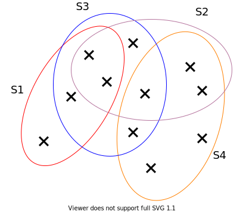
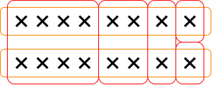

PACT 07/03 集合覆盖问题
集合覆盖问题
定义
输入：全集$\mathcal{U}$，以及一些集合的集合$S={S_1,S_2,S_3,\cdots,S_n}$，满足$\forall i, S_i\subseteq \mathcal{U}$。
目标：从$S$中选择一个最小数目的集合，使得它们能够覆盖$\mathcal{U}$中所有的元素（即并集为$\mathcal U$）

如图，$S_1,S_2,S_4$就构成一个集合覆盖。
贪心算法及其分析
我们的想法很简单：每次都取含有最多未覆盖元素的集合加入我们的覆盖集，不断循环直至所有集合都被覆盖。
我们定义$\mathcal U_i$表示第$i$次循环开始时未覆盖的元素集合，定义$S_i$表示第$i$次循环选择的集合，假设我们选了$k$个集合。有引理：
引理：
$$
\left|S_i \cap\mathcal{U}_i \right| \ge \frac{\left|\mathcal{U}_i\right|}{|\mathrm{OPT}|}
$$
这个引理其实反映了一个“优于平均”的思想。
证明：
$$
\begin{aligned}
\left|\mathcal{U}i\right| &= \left|\bigcup{Z\in\mathrm{OPT}}\left(Z\cap\mathcal{U}i\right)\right| \
&\le \sum{Z\in\mathrm{OPT}}\left|Z\cap\mathcal{U}i\right| \
&\le \sum{Z\in\mathrm{OPT}}\left|S_i\cap\mathcal{U}_i \right| \
&= |\mathrm{OPT}||S_i\cap\mathcal{U}_i |
\end{aligned}
$$
得证。
定理：我们的算法是一个$\mathcal{O}\left(\log n\right)$倍近似算法。
证明：考虑每次循环开始时未覆盖元素的数量：
$$
\begin{aligned}
|\mathcal U_1| &= n \
|\mathcal U_2| &= |\mathcal U_1| - |S_1\cap\mathcal{U}_1| \
&\le |\mathcal U_1|\left(1-\frac{1}{|\mathrm{OPT}|}\right) \
|\mathcal U_3| &= |\mathcal U_2| - |S_2\cap\mathcal{U}_2| \
&\le |\mathcal U_2|\left(1-\frac{1}{|\mathrm{OPT}|}\right) \
&\le |\mathcal U_1|\left(1-\frac{1}{|\mathrm{OPT}|}\right)^2 \
&\vdots \
|\mathcal U_k|
&\le |\mathcal U_1|\left(1-\frac{1}{|\mathrm{OPT}|}\right)^{k-1} \
&= n\left(1-\frac{1}{|\mathrm{OPT}|}\right)^{k-1}
\end{aligned}
$$
因为$\mathcal{U}_k\neq \emptyset$，有
$$
\begin{aligned}
1\le |\mathcal U_k| &\le n\left(1-\frac{1}{|\mathrm{OPT}|}\right)^{k-1} \
1\le n\left(1-\frac{1}{|\mathrm{OPT}|}\right)^k &\le n\left(e^{-\frac{1}{|\mathrm{OPT}|}}\right)^{k-1} \
e^{-\frac{k-1}{|\mathrm{OPT}|}} &\ge \frac{1}{n} \
-\frac{k-1}{|\mathrm{OPT}|} &\ge -\ln n \
k &\le \ln n\cdot |\mathrm{OPT}|+1 \
k &\le \mathcal O\left(\log n\right)|\mathrm{OPT}|
\end{aligned}
$$
证毕。
跑满上界的输入样例
对于这个算法而言我们的分析能不能更好一点呢？这里有一个可以让满足这个上界的例子：

最优解显然是$2$个集合，但是我们的贪心算法每一次都可能选到红色的集合，而这样就需要$\mathcal{O}\left(\log n\right)$个集合完成覆盖了。
带权集合覆盖问题
如果把给每个集合赋予一个权重，而我们需要寻找一个权重和最小的覆盖集呢？这个问题被称作带权集合覆盖。
贪心算法及其分析
我们依然贪心，这个时候我们每次选择“性价比”最优的集合加入我们的覆盖集，设一个集合的权重为$w(\cdot)$，那么我们每一次循环都挑选$\frac{w(\cdot)}{|\cdot|}$最小的集合（$|\cdot|$这里不算已经被覆盖的元素）。
如何分析这个算法？沿用分析不带权覆盖的记号，我们有引理：
引理：
$$
\frac{w(S_i)}{|S_i\cap \mathcal{U}_i|} \le \frac{w(\mathrm{OPT})}{|\mathcal{U}_i|}
$$
证明：
$$
\begin{aligned}
\left|\mathcal{U}i\right| &= \left|\bigcup{Z\in\mathrm{OPT}}\left(Z\cap\mathcal{U}i\right)\right| \
&\le \sum{Z\in\mathrm{OPT}}\left|Z\cap\mathcal{U}_i\right|
\end{aligned}
$$
而由我们算法贪心的本质可知，
$$
\frac{w(S_i)}{|S_i \cap \mathcal{U}_i|} \le \frac{w(Z)}{|Z \cap \mathcal{U}_i|}, \quad \forall Z\in\mathrm{OPT}, Z\cap\mathcal{U}_i\neq\emptyset
$$
也就是
$$
|Z \cap \mathcal{U}_i| \le \frac{w(Z)}{w(S_i)}|S_i \cap \mathcal{U}_i|,\quad \forall Z\in\mathrm{OPT}, Z\cap\mathcal{U}_i\neq\emptyset
$$
因此
$$
\begin{aligned}
\left|\mathcal{U}i\right| &\le \sum{Z\in\mathrm{OPT}}\left|Z\cap\mathcal{U}i\right| \
&\le \sum{Z\in\mathrm{OPT}}\frac{w(Z)}{w(S_i)}|S_i \cap \mathcal{U}_i| \
&= \frac{|S_i \cap \mathcal{U}i|}{w(S_i)}\sum{Z\in\mathrm{OPT}}w(Z) \
&= \frac{|S_i \cap \mathcal{U}_i|}{w(S_i)}w(\mathrm{OPT})
\end{aligned}
$$
随后稍加变形便得引理，证毕。
定理：我们的算法是一个$\mathcal O\left(\log n\right)$倍近似算法。
证明：
$$
\begin{aligned}
|\mathcal U_1| &= n \
|\mathcal U_2| &= |\mathcal U_1| - |S_1\cap\mathcal{U}1| \
&\le |\mathcal U_1|\left(1-\frac{w(S_1)}{w(\mathrm{OPT})}\right) \
&\le |\mathcal U_1|\exp\left(-\frac{w(S_1)}{w(\mathrm{OPT})}\right)\
|\mathcal U_3| &= |\mathcal U_2| - |S_2\cap\mathcal{U}2| \
&\le |\mathcal U_2|\exp\left(-\frac{w(S_2)}{w(\mathrm{OPT})}\right) \
&\le |\mathcal U_1|\exp\left(-\frac{w(S_1)+w(S_2)}{w(\mathrm{OPT})}\right) \
&\vdots \
|\mathcal U_k|
&\le |\mathcal U_1|\exp\left(-\frac{\sum{i=1}^{k-1}w(S_i)}{w(\mathrm{OPT})}\right) \
&= n\exp\left(-\frac{\sum{i=1}^{k-1}w(S_i)}{w(\mathrm{OPT})}\right)
\end{aligned}
$$
又因$|\mathcal U_k| \ge 1$：
$$
\begin{aligned}
n\exp\left(-\frac{\sum_{i=1}^{k-1}w(S_i)}{w(\mathrm{OPT})}\right) &\ge 1 \
-\frac{\sum_{i=1}^{k-1}w(S_i)}{w(\mathrm{OPT})} &\ge -\ln n \
\sum_{i=1}^{k-1}w(S_i) &\le \ln n\cdot w(\mathrm{OPT})
\end{aligned}
$$
证完了？还没有！我们的覆盖集的总代价是$\sum_{i=1}^k w(S_i)$，还差一个$S_k$没有处理呢！
但是注意到之前的结论：
$$
\frac{w(S_i)}{|S_i\cap \mathcal{U}_i|} \le \frac{w(\mathrm{OPT})}{|\mathcal{U}i|}
$$
而当$i=k$时因为是最后一轮，自然有$|S_k\cap \mathcal{U}k| = |\mathcal{U}k|$，因此便有
$$
w(S_k) \le w(\mathrm{OPT})
$$
和之前的式子相加：
$$
\begin{aligned}
\sum{i=1}^{k-1}w(S_i) + w(S_k) &\le \ln n\cdot w(\mathrm{OPT}) + w(\mathrm{OPT})\
\sum{i=1}^{k}w(S_i) &\le (\ln n +1)w(\mathrm{OPT}) \
\sum{i=1}^{k}w(S_i) &\le \mathcal O(\log n) w(\mathrm{OPT})
\end{aligned}
$$
证毕。
其实，如果我们不知道如何给$w(S_k)$定界也没有关系。参考$k$中心问题时我们使用的技巧，我们可以枚举尝试$\mathrm{OPT}$当中权值最大的集合。
显然如果我们知道$\mathrm{OPT}$当中权值最大的集合是什么，我们就会把权值大于这个集合的其他集合全部丢掉。这个时候我们算法的$w(S_k)$自然就不大于$w(\mathrm{OPT})$了。
但是我们怎么知道我们猜的对不对呢？对不对不重要，重要的是因为我们尝试了每一个集合，我们至少会猜对一次——而对于猜对的那一次，我们的分析全部成立，我们的代价一定是不大于$\mathcal O(\log n) w(\mathrm{OPT})$的。因此，如果我们最后取所有尝试的最小值作为我们的解，我们的最终代价一定也是不大于$\mathcal O(\log n) w(\mathrm{OPT})$（虽然最终代价未必是猜对的那一次的代价），我们的算法依然有效，而时间复杂度不过是多了一个$n$而已。
这个技巧是很有意思的：如果可能性是多项式种，那么在只关注是否是多项式时间的近似算法当中，枚举一遍不失为一种好的思路。
另外一种分析方法
令$e_1,e_2,e_3,\cdots,e_n$表示第$1,2,3,\cdots,n$个被覆盖的元素（我们一次选的集合很可能一次性覆盖好几个元素，在这种情况下这些元素的排列可以任意）。我们接下来把集合的权重分摊到元素上，对于被集合$S_y$覆盖的元素$e_i$，定义其代价为
$$
\operatorname{price}(e_i) = \frac{w(S_y)}{|S_y \cap \mathcal{U}y|}
$$
很显然，因为覆盖到$e_i$的时候$e_i$后面的元素一定没有覆盖到，因此$|S_y \cap \mathcal{U}y| \ge n-i+1$。因此
$$
\operatorname{price}(e_i) \le \frac{w(S_y)}{n-i+1}
$$
又由之前的引理以及$|S_y \cap \mathcal U_y| \le |\mathcal U_y|$，可得$w(S_y) \le w(\mathrm{OPT})$，因此
$$
\operatorname{price}(e_i) \le \frac{w(\mathrm{OPT})}{n-i+1}
$$
而我们的覆盖集的总代价为
$$
\begin{aligned}
\sum{i=1}^n w(S_i) &= \sum{i=1}^n \operatorname{price}(e_i) \
&\le \sum_{i=1}^n \frac{w(\mathrm{OPT})}{n-i+1} \
&= w(\mathrm{OPT})\sum_{i=1}^n \frac{1}{n-i+1} \
&= w(\mathrm{OPT})\sum_{i=1}^n \frac{1}{i} \
&= w(\mathrm{OPT}) H_n \
&= O(\log n) w(\mathrm{OPT})
\end{aligned}
$$
跑满上界的输入样例
有一个大集合，包含所有元素，权值为$1+\varepsilon$。
还有$n$个只包含一个元素的小集合，权值为$\frac{1}{n}, \frac{1}{n-1}, \frac{1}{n-2},\cdots$。
对于这个输入，我们的贪心算法会把所有小集合选掉，总权重为$H_n = \mathcal{O}(\log n )$。而最优解为那个大集合，总权重为$1+\varepsilon$，二者差$\mathcal{O}(\log n )$倍，和我们的分析一致，这也说明如果算法不变，我们没办法单纯通过分析得出更好的结果了。
其实集合覆盖问题可以证明hardness就是$\mathcal{O}(\log n )$的，只是这个证明不简单，上课的时候只是顺带提了一下。